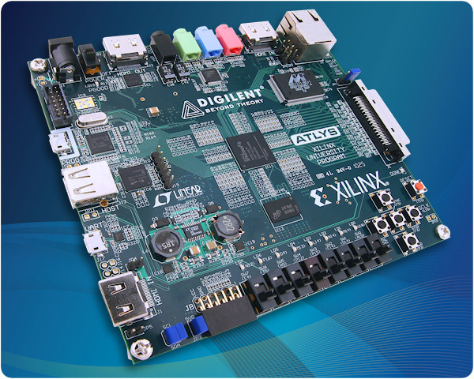

Digilent Atlys
The Digilent Atlys was the original prototyping platform for developing the HDMI2USB firmware and continues to be a supported platform.

Getting Started
- Purchase a board (links below).
- Load the firmware (see Firmware).
- Test and use the device. (see Digilent Atlys - Using).
Useful Resources
- http://www.digilentinc.com/atlys/ - US$419
- http://www.amazon.com/Atlys-Spartan - US $414.95
- Recommended Conference Adapter Kit
- Additional information in the HDMI2USB wiki
Technical Specifications
Features listed in grey are currently unsupported by the firmware.

|
|
| FPGA | Xilinx Spartan-6 LX45 FPGA |
|---|---|
| Memory | 128Mbyte DDR2 |
| Video Interfaces | |
| Comms |
|
| Storage | 16Mbyte SPI Flash |
| Audio | AC-97 Codec (unsupported) |
| Expansion | 1 x Digilent VHDCI, 1 x PMOD[5] |
| Power Supply | 5V @ 4A |